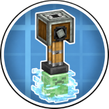
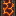
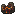
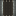
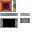
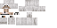
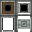

Create: Biotech - 机械动力：生物科技
附属模组
机械动力：生物科技是一个给机械动力增加“生物零件”的附属模组…
这是什么
机械动力：生物科技是一个给机械动力增加“生物零件”的附属模组，它将生物直接接进机械动力原有的应力、物流、加工、动态结构等系统中。
命名空间：
create_biotech 1.20.1 版本：本页物品与配方直接取自该版本的 jar。其他43
生物打包机create_biotech:bio_packager
活体构件create_biotech:bionic_mechanism
骨制棘轮create_biotech:bone_ratchet
经验母岩create_biotech:budding_experience
鸡create_biotech:chicken
没有工作台/机器配方
奶油create_biotech:cream
没有工作台/机器配方
叮咚鸡create_biotech:ding_dong_chicken
没有工作台/机器配方
叮咚鸡刷怪蛋create_biotech:ding_dong_chicken_spawn_egg
没有工作台/机器配方
经验create_biotech:experience
没有工作台/机器配方
经验簇create_biotech:experience_cluster
没有工作台/机器配方
未完成的悦灵快递员create_biotech:incomplete_allay_courier
没有工作台/机器配方
未完成的活体构件create_biotech:incomplete_bionic_mechanism
没有工作台/机器配方
大型经验芽create_biotech:large_experience_bud
没有工作台/机器配方
中型经验芽create_biotech:medium_experience_bud
没有工作台/机器配方
潜影包裹create_biotech:shulker_package
没有工作台/机器配方
潜影传送站create_biotech:shulker_teleporter
小型经验芽create_biotech:small_experience_bud
没有工作台/机器配方
智能强力胶create_biotech:smart_super_glue
传送液create_biotech:teleportation
没有工作台/机器配方
机器与设备12
空的岩浆怪燃烧室create_biotech:empty_magma_cube_burner

岩浆怪传送带create_biotech:magma_belt
没有工作台/机器配方

岩浆怪传送带create_biotech:magma_belt_connector
没有工作台/机器配方

动力传送带create_biotech:power_belt
没有工作台/机器配方
动力传送带create_biotech:power_belt_connector
史莱姆传送带create_biotech:slime_belt
没有工作台/机器配方
史莱姆传送带create_biotech:slime_belt_connector
没有工作台/机器配方
蜘蛛装配台尾齿轮create_biotech:spider_assembly_table_cog
没有工作台/机器配方
食物与饮品10
黄油create_biotech:butter
未完成的爆破室核心create_biotech:incomplete_creeper_blast_chamber
没有工作台/机器配方
未完成的超级黄油create_biotech:incomplete_super_butter
没有工作台/机器配方
超级黄油create_biotech:super_butter
建筑与装饰9
防爆玻璃create_biotech:blast_proof_glass
防爆物品保险库create_biotech:explosion_proof_item_vault
材料与零件6
末影无线终端create_biotech:wireless_terminal
流体与储运5
奶油桶create_biotech:cream_bucket
没有工作台/机器配方

经验泵create_biotech:experience_pump
液态活体史莱姆create_biotech:liquid_living_slime
没有工作台/机器配方
液态活体史莱姆桶create_biotech:liquid_living_slime_bucket
没有工作台/机器配方
传送液桶create_biotech:teleportation_bucket
没有工作台/机器配方
工具与武器5
史莱姆靴子create_biotech:slime_boots
史莱姆胸甲create_biotech:slime_chestplate
史莱姆头盔create_biotech:slime_helmet
史莱姆护腿create_biotech:slime_leggings

大狗音波炮create_biotech:sonic_dog_cannon
交通与列车1

恶魂热气球装配站create_biotech:ghast_hot_air_balloon_assembly_station